Calculus tutorial#
Click the binder button  or this link
or this link bit.ly/calctut3 to run this notebooks interactively.
Abstract Calculus is the study of the properties of functions.
The operations of calculus are used to describe the limit behaviour of functions,
calculate their rates of change, and calculate the areas under their graphs.
In this section we’ll learn about the SymPy functions for calculating
limits, derivatives, integrals, and summations.
%pip install --quiet sympy numpy scipy seaborn ministats
Note: you may need to restart the kernel to use updated packages.
import matplotlib.pyplot as plt
import numpy as np
import seaborn as sns
sns.set_theme(
context="paper",
style="whitegrid",
palette="colorblind",
rc={"font.family": "serif",
"font.serif": ["Palatino", "DejaVu Serif", "serif"],
"figure.figsize": (5, 1.7)},
)
%config InlineBackend.figure_format = 'retina'
# simple float __repr__
np.set_printoptions(legacy='1.25')
# Temporary for figure generation
import os
from ministats.utils import savefigure
# Temporary to extract ASCII text for codeblocks
from sympy import init_printing
init_printing()
# init_printing(pretty_print=False)
Introduction#
Example 1: file download#
Download rate#
Inverse problem#
def fprime(t):
return 2 # [MB/sec]
dt = 1 # [sec]
tau = 10 # after ten seconds
sum([fprime(t)*dt for t in range(0,tau)])
tau = 360 # after 360 seconds
sum([fprime(t)*dt for t in range(0,tau)])
Infinity#
Example 2: Euler’s number#
(1+1/2)**2
(1+1/3)**3
(1+1/4)**4
(1+1/12)**12
(1+1/365)**365
(1+1/1000)**1000
import sympy as sp
n = sp.symbols("n")
sp.limit( (1+1/n)**n, n, sp.oo).evalf()
Applications#
Doing calculus#
Symbolic calculations using pen and paper#
Symbolic calculations using SymPy#
%pip install -q sympy
Note: you may need to restart the kernel to use updated packages.
import sympy as sp
# define symbolic variable x
x = sp.symbols("x")
The symbols function creates SymPy symbolic variables.
Unlike ordinary Python variables that hold a particular value,
SymPy variables act as placeholders that can take on any value.
We can use the symbolic variables to create expressions,
just like we do with math variables in pen-and-paper calculations.
expr = 4 - x**2
expr
sp.factor(expr)
To substitute a given value into an expression, call the .subs()
method, passing in a python dictionary object { key:val, ... }
with the symbol–value substitutions you want to make:
expr.subs({x:1})
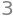
sp.solve(expr, x)
The function solve is the main workhorse in SymPy. This incredibly
powerful function knows how to solve all kinds of equations. In fact
solve can solve pretty much any equation! When high school students
learn about this function, they get really angry—why did they spend
five years of their life learning to solve various equations by hand,
when all along there was this solve thing that could do all the math
for them? Don’t worry, learning math is never a waste of time.
The function solve takes two arguments. Use solve(expr,var) to
solve the equation expr==0 for the variable var. You can rewrite any
equation in the form expr==0 by moving all the terms to one side
of the equation; the solutions to \(A(x) = B(x)\) are the same as the
solutions to \(A(x) - B(x) = 0\).
For example, to solve the quadratic equation \(x^2 + 2x - 8 = 0\), use
sp.solve( x**2 + 2*x - 8, x)
In this case the equation has two solutions so solve returns a list.
Check that \(x = 2\) and \(x = -4\) satisfy the equation \(x^2 + 2x - 8 = 0\).
Simplify any math expression
sp.simplify(2*x + 3*x - sp.sin(x) + 42)
sp.expand( (x-4)*(x+2) )
Collect the terms in expression that contain different powers of x.
a, b, c = sp.symbols("a b c")
sp.collect(x**2 + x*b + a*x + a*b, x)
Numerical computing using NumPy#
%pip install -q numpy
Note: you may need to restart the kernel to use updated packages.
import numpy as np
np.array([1.0, 1.1, 1.2, 1.3, 1.4, 1.5])
array([1. , 1.1, 1.2, 1.3, 1.4, 1.5])
np.linspace(1.0, 1.5, 6)
array([1. , 1.1, 1.2, 1.3, 1.4, 1.5])
xs = np.linspace(-2, 2, 21)
xs
array([-2. , -1.8, -1.6, -1.4, -1.2, -1. , -0.8, -0.6, -0.4, -0.2, 0. ,
0.2, 0.4, 0.6, 0.8, 1. , 1.2, 1.4, 1.6, 1.8, 2. ])
def h(x):
return 4 - x**2
fhs = h(xs)
fhs
array([0. , 0.76, 1.44, 2.04, 2.56, 3. , 3.36, 3.64, 3.84, 3.96, 4. ,
3.96, 3.84, 3.64, 3.36, 3. , 2.56, 2.04, 1.44, 0.76, 0. ])
Scientific computing using SciPy#
%pip install -q scipy
Note: you may need to restart the kernel to use updated packages.
from scipy.integrate import quad
quad(h, 0, 2)[0]
Math prerequisites#
Notation for sets and intervals#
S = {1, 2, 3}
T = {3, 4, 5, 6}
print("S ∪ T =", S.union(T))
print("S ∩ T =", S.intersection(T))
print("S \\ T =", S.difference(T))
S ∪ T = {1, 2, 3, 4, 5, 6}
S ∩ T = {3}
S \ T = {1, 2}
The number line#
Number intervals#
Functions#
In Python, we define functions using the def keyword.
For example, the code cell below defines the function \(f(x)=\frac{1}{2}x^2\), then evaluate it for the input \(x=3\).
# define the function f that takes input x
def f(x):
return 0.5 * x**2
# calling the function g on input x=4
f(3)
Function graphs#
The graph of the function \(f(x)\) is obtained by plotting a curve that passes through the set of input-output coordinate pairs \((x, f(x))\).
import numpy as np
xs = np.linspace(-3, 3, 1000)
fxs = f(xs)
import seaborn as sns
sns.lineplot(x=xs, y=fxs);
# FIGURES ONLY
ax = plt.gca()
ax.set_yticks([0,1,2,3,4])
ax.set_xlabel("$x$")
ax.set_ylabel("$f(x)$")
filename = os.path.join("figures/tutorials/calculus", "graph_of_function_f_eq_halfx2.pdf")
savefigure(plt.gca(), filename)
Saved figure to figures/tutorials/calculus/graph_of_function_f_eq_halfx2.pdf
Saved figure to figures/tutorials/calculus/graph_of_function_f_eq_halfx2.png
{kind=link}
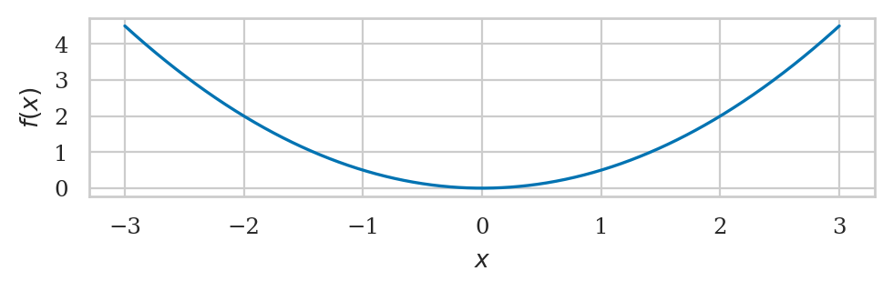
The function linspace(-3,3,1000) creates an array of 1000 points in the interval \([-3,3]\).
We store this sequence of inputs into the variable xs.
Next, we computer the output value \(f(x)\) for each of the inputs in the array xs,
and store the result in the array fxs.
Finally, we use the function sns.lineplot() to generate the plot.
from ministats.calculus import plot_func
plot_func(f, xlim=[-3,3]);
{kind=link}
Inverse functions#
The inverse function \(f^{-1}\) performs the \emph{inverse operation} of the function \(f\). If you start from some \(x\), apply \(f\), then apply \(f^{-1}\), you’ll arrive—full circle—back to the original input \(x\):
The inverse of the function \(f(x) = \frac{1}{2}x^2\) is the function \(f^{-1}(x) = \sqrt{2x}\). Earlier we computed \(f(3) = 4.5\). If we apply the inverse function to \(4.5\), we get \(f^{-1}(4.5) = \sqrt{2 \cdot 4.5} = \sqrt{9} = 3\).
from math import sqrt
sqrt(2*4.5)
The logarithmic function \(\log(x)\) is the inverse of the exponential function \(e^x\). If if we compute the exponential function of a number, then apply the logarithmic function, we get back the original input.
from math import exp, log
log(exp(5))
Function properties#
Function inventory#
def line(x):
return x
ax = plot_func(line, xlim=[-2,2])
ax.set_title("(a) Graph of the function $f(x) = x$");
{kind=link}
# from ministats.calculus import plot_func
def plot_func(f, xlim=[-1,1], ylim=None, ax=None, title=None):
xs = np.linspace(xlim[0], xlim[1], 1000)
fxs = np.array([f(x) for x in xs])
ax = sns.lineplot(x=xs, y=fxs, ax=ax)
ax.set_title(title)
ax.set_ylim(ylim)
return ax
fig, axs = plt.subplots(2, 3, figsize=(7,4))
# (a) line
def line(x):
return x
ax_a = axs[0][0]
plot_func(line, xlim=[-2,2], ylim=[-2,2], ax=ax_a, title="(a) $f(x) = x$")
# (b) quadratic
ax_b = axs[0][1]
def quadratic(x):
return x**2
plot_func(quadratic, xlim=[-2,2], ylim=[-0.1,5], ax=ax_b, title="(b) $f(x) = x^2$")
# (c) exp
ax_c = axs[0][2]
plot_func(np.exp, xlim=[-2,2], ylim=[-0.2,8], ax=ax_c, title="(c) $f(x) = e^x$")
# (d) |x|
ax_d = axs[1][0]
plot_func(np.abs, xlim=[-2,2], ylim=[-2,2], ax=ax_d, title="(d) $f(x) = |x|$")
# (e) square root
ax_e = axs[1][1]
plot_func(np.sqrt, xlim=[0,4], ylim=[-0.1,2.8], ax=ax_e, title="(e) $f(x) = \\sqrt{x}$")
ax_e.set_xticks([0,1,2,3,4])
# (f) log
ax_f = axs[1][2]
plot_func(np.log, xlim=[0.00001,8], ylim=[-2,2.5], ax=ax_f, title="(f) $f(x) = \\ln(x)$")
ax_f.set_xlim([-0.3,8])
fig.tight_layout()
# FIGURES ONLY
filename = os.path.join("figures/tutorials/calculus", "panel_function_graphs1.pdf")
savefigure(plt.gca(), filename)
Saved figure to figures/tutorials/calculus/panel_function_graphs1.pdf
Saved figure to figures/tutorials/calculus/panel_function_graphs1.png
{kind=link}
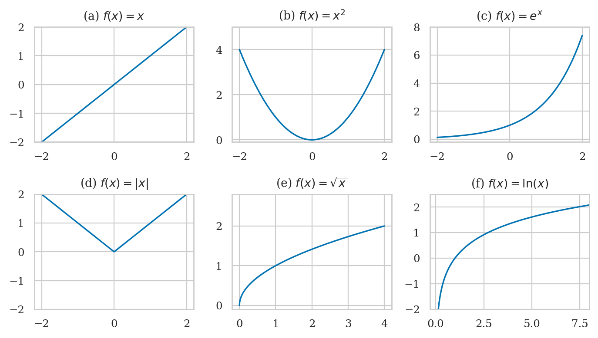
Geometry#
Circle#
import math
math.pi
Rectangle#
Triangle#
Trigonometry#
The trigonometric functions sin and cos take inputs in radians:
sp.sin(sp.pi/6)
sp.cos(sp.pi/6)
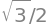
For angles in degrees, you need a conversion factor of \(\frac{\pi}{180}\)[rad/\(^\circ\)]:
sp.sin(30*sp.pi/180) # 30 deg = pi/6 rads
# TODO: move to ministats.figures
fig, axs = plt.subplots(1, 3, figsize=(7,2))
xlim = [-0.1, 4*np.pi+0.1]
# (a) sin
ax_a = axs[0]
plot_func(np.sin, xlim=xlim, ylim=[-2,2], ax=ax_a, title=r"(a) $f(\theta) = \sin(\theta)$")
# (b) cos
ax_b = axs[1]
plot_func(np.cos, xlim=xlim, ylim=[-2,2], ax=ax_b, title=r"(b) $f(\theta) = \cos(\theta)$")
# (c) tan
ax_c = axs[2]
def plot_tan(xlim=[-1,1], ylim=None, ax=None, title=None):
num_periods = int(xlim[1] / np.pi)
xleft = xlim[0]
for k in range(0, num_periods+1):
xright = np.pi/2 + k*np.pi + -0.0001
if xright > xlim[1]:
xright = xlim[1]
xs = np.linspace(xleft, xright, 1000)
fxs = np.array([np.tan(x) for x in xs])
ax = sns.lineplot(x=xs, y=fxs, ax=ax, color="C0")
xleft = np.pi/2 + k*np.pi + 0.0001
ax.set_title(title)
ax.set_ylim(ylim)
plot_tan(xlim=xlim, ylim=[-10,10], ax=ax_c, title=r"(c) $f(\theta) = \tan(\theta)$")
fig.tight_layout()
# FIGURES ONLY
filename = os.path.join("figures/tutorials/calculus", "panel_function_graphs2.pdf")
savefigure(plt.gca(), filename)
Saved figure to figures/tutorials/calculus/panel_function_graphs2.pdf
Saved figure to figures/tutorials/calculus/panel_function_graphs2.png
{kind=link}
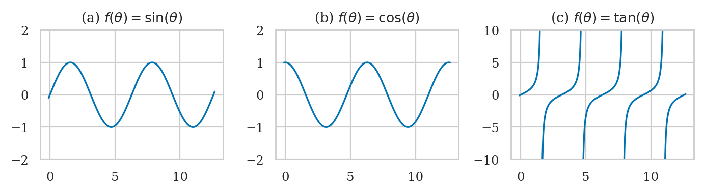
Limits#
We use limits to describe, with mathematical precision, infinitely large quantities, infinitely small quantities, and procedures with infinitely many steps.
Example: area of a circle#
Consider a polygon with \(n\) sides inscribed in inside of a circle of radius \(r\).
import math
def calc_area(n, r=1):
theta = 2 * math.pi / (2 * n)
a = r * math.cos(theta)
b = r * math.sin(theta)
area = 2 * n * a * b / 2
return area
for n in [6, 8, 10, 50, 100, 1000, 10000]:
area_n = calc_area(n)
error = area_n - math.pi
print(f"{n=}, {area_n=}, {error=}")
n=6, area_n=2.5980762113533156, error=-0.5435164422364775
n=8, area_n=2.8284271247461903, error=-0.3131655288436028
n=10, area_n=2.938926261462365, error=-0.2026663921274281
n=50, area_n=3.133330839107606, error=-0.008261814482187102
n=100, area_n=3.1395259764656687, error=-0.0020666771241244497
n=1000, area_n=3.141571982779476, error=-2.0670810317202637e-05
n=10000, area_n=3.1415924468812855, error=-2.067085076440378e-07
n, r = sp.symbols("n r")
A_n = n * r**2 * sp.cos(sp.pi/n) * sp.sin(sp.pi/n)
sp.limit(A_n, n, sp.oo)
1-sp.N(1/sp.E)
Infinity#
The infinity symbol is denoted oo (two lowercase os) in SymPy. Infinity
is not a number but a process: the process of counting forever. Thus,
\(\infty + 1 = \infty\), \(\infty\) is greater than any finite number, and \(1/\infty\) is an
infinitely small number. Sympy knows how to correctly treat infinity
in expressions:
from sympy import oo
oo+1
5000 < oo
1/oo
Limits at infinity#
Limits are also useful to describe the behaviour of functions.
Consider the function \(f(x) = \frac{1}{x}\).
The limit command shows us what happens to \(f(x)\) as \(x\) goes to infinity:
x = sp.symbols("x")
sp.limit(1/x, x, oo)
As \(x\) becomes larger and larger, the fraction \(\frac{1}{x}\) becomes smaller and smaller. In the limit where \(x\) goes to infinity, \(\frac{1}{x}\) approaches zero: \(\lim_{x\to\infty}\frac{1}{x} = 0\).
Example 2#
x = sp.symbols("x")
sp.limit( (2*x+1)/x , x, sp.oo)
Euler’s number as a limit#
The number \(e\) is defined as the limit \(e \equiv \lim_{n\to\infty}\left(1+\frac{1}{n}\right)^n\):
n = sp.symbols("n")
sp.limit( (1+1/n)**n, n, sp.oo)
sp.limit( (1+1/n)**n, n, sp.oo).evalf()
This limit expression describes the annual growth rate of a loan with a nominal interest rate of 100% and infinitely frequent compounding. Borrow \(\$1000\) in such a scheme, and you’ll owe \(\$2718.28\) after one year.
Euler’s number as a series#
Euler’s constant \(e = 2.71828\dots\) is defined one of several ways,
and is denoted E in SymPy. Using exp(x) is equivalent to E**x.
The functions log and ln both compute the logarithm base \(e\):
Limits to a number#
Continuity#
Limit formulas#
Computing limits using SymPy#
Applications of limits#
Limits for derivatives#
Limit for integrals#
Limits for series#
Derivatives#
The derivative function, denoted \(f'(x)\), \(\frac{d}{dx}f(x)\), \(\frac{df}{dx}\), or \(\frac{dy}{dx}\), describes the rate of change of the function \(f(x)\).
Derivatives as slope calculations#
Numerical derivative calculations#
def differentiate(f, x, delta=1e-9):
"""
Compute the derivative of the function `f` at `x`
using the rise-over-run calculation for run `delta`.
"""
df = f(x+delta) - f(x)
dx = delta
return df / dx
def f(x):
return 0.5 * x**2
differentiate(f, 1)
Derivative formulas#
Derivative rules#
Higher derivatives#
Examples#
Computing derivatives analytically using SymPy#
The SymPy function diff computes the derivative of any expression:
m, x, b = sp.symbols("m x b")
sp.diff(m*x + b, x)
x, n = sp.symbols("x n")
sp.simplify(sp.diff(x**n, x))
The exponential function \(f(x)=e^x\) is special because it is equal to its derivative:
from sympy import exp
sp.diff(exp(x), x)
Examples revisited#
sp.diff(sp.exp(x**2), x)
sp.diff(sp.sin(x)*sp.exp(x**2), x)
sp.diff(sp.sin(x**2), x)
Applications of derivatives#
Tangent lines#
The tangent line to the function \(f(x)\) at \(x=x_0\) is the line that passes through the point \((x_0, f(x_0))\) and has the same slope as the function at that point. The tangent line to the function \(f(x)\) at the point \(x=x_0\) is described by the equation
What is the equation of the tangent line to \(f(x)=\frac{1}{2}x^2\) at \(x_0=1\)?
fs = x**2 / 2
fs
dfsdx = sp.diff(fs, x)
dfsdx
a = 1
T_1 = fs.subs({x:a}) + dfsdx.subs({x:a})*(x - a)
T_1
Optimization#
Optimization is about choosing an input for a function \(f(x)\) that results in the best value for \(f(x)\). The best value usually means the maximum value (if the function represents something desirable like profits) or the minimum value (if the function represents something undesirable like costs).
The derivative \(f'(x)\) encodes the information about the slope of \(f(x)\). Positive slope \(f'(x)>0\) means \(f(x)\) is increasing, negative slope \(f'(x)<0\) means \(f(x)\) is decreasing, and zero slope \(f'(x)=0\) means the graph of the function is horizontal. The critical points of a function \(f(x)\) are the solutions to the equation \(f'(x)=0\). Each critical point is a candidate to be either a maximum or a minimum of the function.
Analytical optimization using SymPy#
Let’s find the critical points of the function \(f(x)=x^3-2x^2+x\) and use the information from its second derivative to find the maximum of the function on the interval \(x \in [0,1]\).
x = sp.symbols('x')
fs = x**3 - 2*x**2 + x
sp.plot(fs, (x,0,1.5));
{kind=link}
sp.diff(fs, x).factor()
sols = sp.solve( sp.diff(fs,x), x)
sols # critical values
sp.diff(fs, x, 2).subs({x:sols[0]})
sp.diff(fs, x, 2).subs({x:sols[1]})
It we look at the graph of this function, we see the point \(x=\frac{1}{3}\) is a local maximum because it is a critical point of \(f(x)\) where the curvature is negative, meaning \(f(x)\) looks like the peak of a mountain at \(x=\frac{1}{3}\). The maximum value of \(f(x)\) on the interval \(x\in [0,1]\) is \(f\!\left(\frac{1}{3}\right)=\frac{4}{27}\). The point \(x=1\) is a local minimum because it is a critical point with positive curvature, meaning \(f(x)\) looks like the bottom of a valley at \(x=1\).
Numerical optimization#
def gradient_descent(f, x0=0, alpha=0.05, tol=1e-10):
"""
Find the minimum of the function `f` using gradient descent.
"""
current_x = x0
change = 1
while change > tol:
df_at_x = differentiate(f, current_x)
next_x = current_x - alpha * df_at_x
change = abs(next_x - current_x)
current_x = next_x
return current_x
def q(x):
return (x - 5)**2
gradient_descent(q, x0=10)
Numerical optimization using SciPy#
Let’s solve the same optimization problem using the function minimize from scipy.optimize.
from scipy.optimize import minimize
res = minimize(q, x0=10)
res["x"][0] # = argmin f(x)
Integrals#
Integrals as area calculations#
The integral of \(f(x)\) corresponds to the computation of the area under the graph of \(f(x)\). The area under \(f(x)\) between the points \(x=a\) and \(x=b\) is denoted as follows:
Example 1: integral of a constant function#
def f(x):
return 3
from ministats.calculus import plot_integral
ax = plot_integral(f, a=0, b=5, xlim=[-0.4,7], flabel="f")
ax.text(2.5, 1.5, "$A_f(0,\\!5)$", ha="center", fontsize="x-large");
{kind=link}
Example 2: integral of a linear function#
def g(x):
return x
from ministats.calculus import plot_integral
ax = plot_integral(g, a=0, b=5, xlim=[0,7], flabel="g")
ax.text(3.5, 1.5, "$A_g(0,\\!5)$", ha="center", fontsize="x-large");
{kind=link}
Example 3: integral of a polynomial#
def h(x):
return 4 - x**2
from ministats.calculus import plot_integral
ax = plot_integral(h, a=0, b=2, xlim=[-0.03,2], flabel="h")
ax.set_xticks(np.arange(0,2.2,0.2))
ax.text(0.8, 1.2, "$A_h(0,\\!2)$", ha="center", fontsize="x-large");
# FIGURES ONLY
filename = os.path.join("figures/tutorials/calculus", "simple_integral_hx_eq_x.pdf")
savefigure(ax, filename)
Saved figure to figures/tutorials/calculus/simple_integral_hx_eq_x.pdf
Saved figure to figures/tutorials/calculus/simple_integral_hx_eq_x.png
{kind=link}
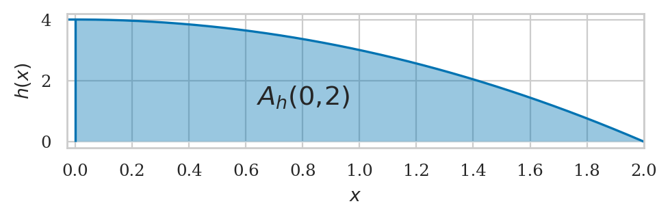
Computing integrals numerically#
Computing integral of \(f(x)\) “numerically” means we’re splitting the region of integration into many (think thousands or millions) of strips, computing the areas of these strips, then adding up the areas to obtain the total area under the graph of \(f(x)\). The approximation to the area under \(f(x)\) between \(x=a\) and \(x=b\) using \(n\) rectangular strips corresponds to the following formula:
where \(\Delta x = \frac{b-a}{n}\) is the width of the rectangular strips. The right endpoint of the \(k\)\textsuperscript{th} is located at \(x_k = a + k\Delta x\), so the height of the rectangular strips \(f(x_k)\) varies as \(k\) goes from between \(k=1\) (first strip) and \(k=n\) (last strip).
def integrate(f, a, b, n=10000):
"""
Computes the area under the graph of `f`
between `x=a` and `x=b` using `n` rectangles.
"""
dx = (b - a) / n # width of rectangular strips
xs = [a + k*dx for k in range(1,n+1)] # right-corners of the strips
fxs = [f(x) for x in xs] # heights of the strips
area = sum([fx*dx for fx in fxs]) # total area
return area
Example 3 continued: integral of a polynomial#
def h(x):
return 4 - x**2
integrate(h, a=0, b=2, n=10)
from ministats.calculus import plot_riemann_sum
ax = plot_riemann_sum(h, a=0, b=2, xlim=[-0.01,2.01], n=10, flabel="h")
ax.set_xticks(np.arange(0,2.2,0.2));
Riemann sum with n=10 rectangles: approx. area ≈ 4.92000
{kind=link}
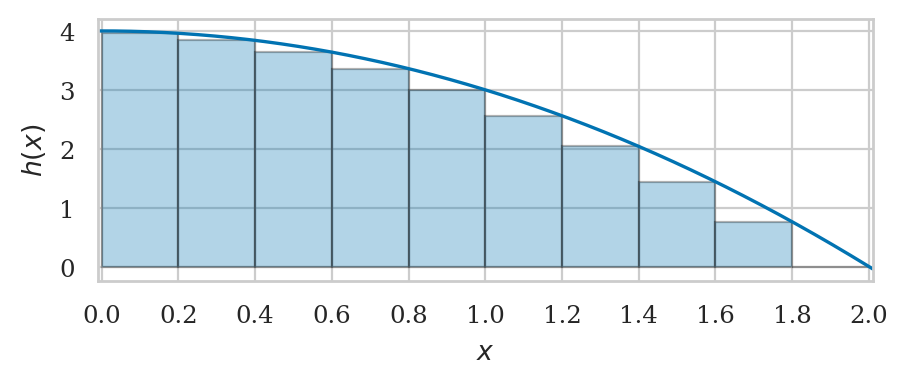
integrate(h, a=0, b=2, n=20)
plot_riemann_sum(h, a=0, b=2, xlim=[-0.01,2.01], n=20, flabel="h");
Riemann sum with n=20 rectangles: approx. area ≈ 5.13000
{kind=link}
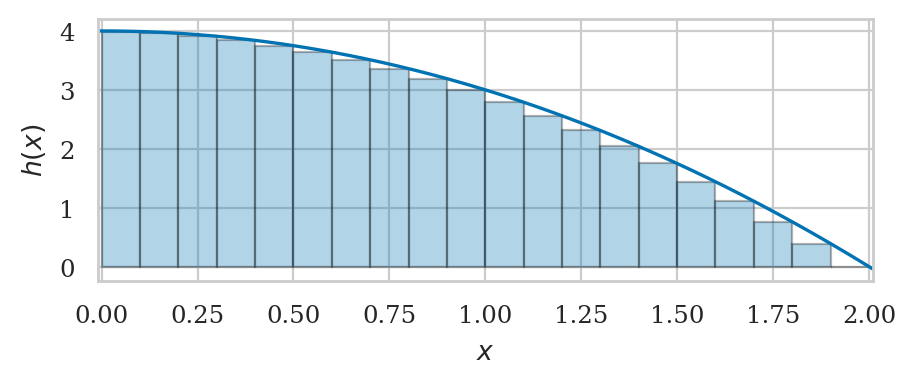
# FIGURES ONLY
fig, axs = plt.subplots(1, 2, figsize=(7,2), sharey=True)
plot_riemann_sum(h, a=0, b=2, xlim=[-0.01,2.01], n=10, flabel="h", ax=axs[0])
axs[0].set_xticks(np.arange(0,2.2,0.2))
area_10 = integrate(h, a=0, b=2, n=10)
axs[0].set_title(f"(a) Approximation $A_h(0,\\!2) \\approx {area_10}$ when $n=10$.")
axs[0].set_xlabel(None)
plot_riemann_sum(h, a=0, b=2, xlim=[-0.01,2.01], n=20, flabel="h", ax=axs[1])
axs[1].set_xticks(np.arange(0,2.2,0.2))
axs[1].set_xlabel(None)
area_20 = integrate(h, a=0, b=2, n=20)
axs[1].set_title(f"(b) Approximation $A_h(0,\\!2) \\approx {area_20}$ when $n=20$.")
fig.tight_layout()
filename = os.path.join("figures/tutorials/calculus", "riemann_sum_n10_n20.pdf")
savefigure(plt.gca(), filename)
Riemann sum with n=10 rectangles: approx. area ≈ 4.92000
Riemann sum with n=20 rectangles: approx. area ≈ 5.13000
Saved figure to figures/tutorials/calculus/riemann_sum_n10_n20.pdf
Saved figure to figures/tutorials/calculus/riemann_sum_n10_n20.png
{kind=link}
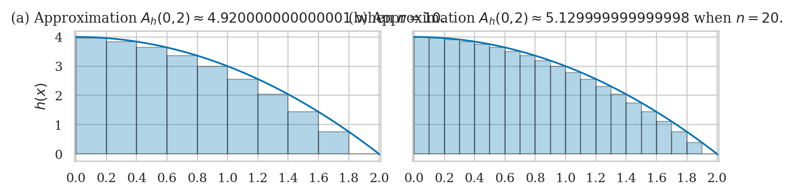
integrate(h, a=0, b=2, n=50)
integrate(h, a=0, b=2, n=100)
# FIGURES ONLY
fig, axs = plt.subplots(1, 2, figsize=(7,2), sharey=True)
plot_riemann_sum(h, a=0, b=2, xlim=[-0.01,2.01], n=50, flabel="h", ax=axs[0])
area_50 = integrate(h, a=0, b=2, n=50)
axs[0].set_title(f"(a) $A_h(0,\\!2) \\approx {area_50}$ when $n=50$.")
axs[0].set_xlabel(None)
plot_riemann_sum(h, a=0, b=2, xlim=[-0.01,2.01], n=100, flabel="h", ax=axs[1])
area_100 = integrate(h, a=0, b=2, n=100)
axs[1].set_title(f"(b) $A_h(0,\\!2) \\approx {area_100}$ when $n=100$.")
axs[1].set_ylabel(None)
axs[1].set_xlabel(None)
fig.tight_layout()
filename = os.path.join("figures/tutorials/calculus", "riemann_sum_n50_n100.pdf")
savefigure(fig, filename)
Riemann sum with n=50 rectangles: approx. area ≈ 5.25280
Riemann sum with n=100 rectangles: approx. area ≈ 5.29320
Saved figure to figures/tutorials/calculus/riemann_sum_n50_n100.pdf
Saved figure to figures/tutorials/calculus/riemann_sum_n50_n100.png
{kind=link}
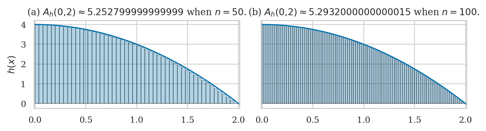
integrate(h, a=0, b=2, n=1000)
integrate(h, a=0, b=2, n=10000)
integrate(h, a=0, b=2, n=1_000_000)
Example 1 and 2 revisited#
def f(x):
return 3
integrate(f, a=0, b=5, n=100000)
def g(x):
return x
integrate(g, a=0, b=5, n=100000)
Formal definition of the integral#
Riemann sum
As \(n\) goes to infinity…
Integrals as functions#
The integral function \(F\) corresponds to the area calculation as a function of the upper limit of integration:
The area under \(f(x)\) between \(x=a\) and \(x=b\) is obtained by calculating the change in the integral function:
In SymPy we use integrate(f, x) to obtain the integral function \(F(x)\) of any function \(f(x)\):
\(F(x) = \int_0^x f(u)\,du\).
Example 1 revisited#
ax = plot_integral(f, a=0, b=4.6, xlim=[-0.2,7], flabel="f")
ax.set_ylim(0,4.1)
ax.set_yticks([0,1,2,3,4])
ax.text(2.3, 1.3, "$F_0(b)=\\int_{\\!0}^{\\!b} f(x)dx$", ha="center", fontsize="x-large");
ax.text(4.6, -0.7, "$b$", ha="center")
# FIGURES ONLY
filename = os.path.join("figures/tutorials/calculus", "simple_integral_function_fx_eq_3.pdf")
savefigure(ax, filename)
Saved figure to figures/tutorials/calculus/simple_integral_function_fx_eq_3.pdf
Saved figure to figures/tutorials/calculus/simple_integral_function_fx_eq_3.png
{kind=link}
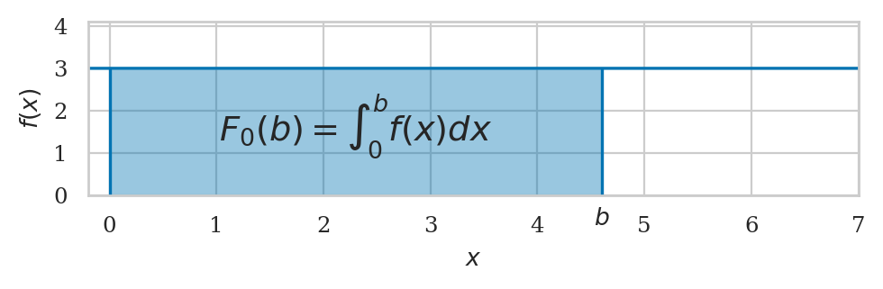
Example 2 revisited#
ax = plot_integral(g, a=0, b=4.6, xlim=[-0.03,6.2], flabel="g")
ax.set_ylim(0, 5.5)
ax.set_yticks([0,1,2,3,4,5])
ax.text(3.4, 1.2, "$G_0(b)=\\int_{\\!0}^{\\!b} g(x)dx$", ha="center", fontsize="large");
ax.text(4.6, -1, "$b$", ha="center")
# FIGURES ONLY
filename = os.path.join("figures/tutorials/calculus", "simple_integral_function_gx_eq_x.pdf")
savefigure(ax, filename)
Saved figure to figures/tutorials/calculus/simple_integral_function_gx_eq_x.pdf
Saved figure to figures/tutorials/calculus/simple_integral_function_gx_eq_x.png
{kind=link}
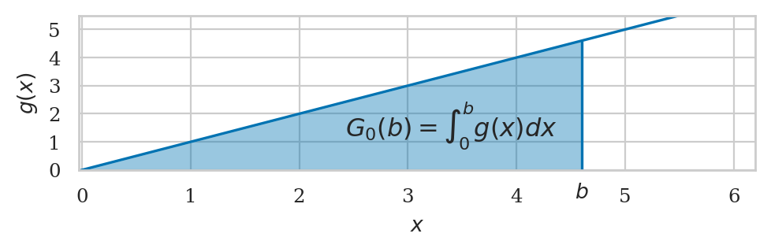
Example 3 revisited#
ax = plot_integral(h, a=0, b=1.3, xlim=[-0.03,2], flabel="h")
ax.set_xticks(np.arange(0,2.2,0.2))
ax.text(0.65, 1.2, "$H_0(b)=\\int_{\\!0}^{\\!b} h(x)dx$", ha="center", fontsize="x-large");
ax.text(1.3, -0.9, "$b$", ha="center")
# FIGURES ONLY
filename = os.path.join("figures/tutorials/calculus", "integral_function_hx_eq_x.pdf")
savefigure(ax, filename)
Saved figure to figures/tutorials/calculus/integral_function_hx_eq_x.pdf
Saved figure to figures/tutorials/calculus/integral_function_hx_eq_x.png
{kind=link}
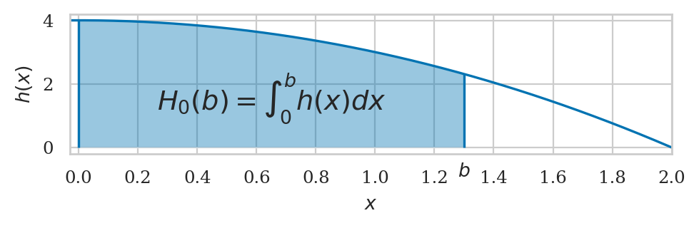
Properties of integrals#
Fundamental theorem of calculus#
The integral is the “inverse operation” of the derivative. If you perform the integral operation followed by the derivative operation on some function, you’ll obtain the same function:
fx = x**2
Fx = sp.integrate(fx, x)
Fx
sp.diff(Fx, x)
Alternately, if you compute the derivative of a function \(F(x)\) followed by the integral, you will obtain the original function (up to a constant):
Fx = x**3
dFdx = sp.diff(Fx,x)
dFdx
sp.integrate(dFdx, x)
Using derivative formulas in reverse#
The fundamental theorem of calculus gives us a symbolic trick for computing the integrals functions \(\int f(x)\,dx\) for many simple functions.
If you can find a function \(F(x)\) such that \(F'(x) = f(x)\), then the integral of \(f(x)\) is \(F(x)\) plus some constant:
fx = m + sp.exp(x) + 1/x + sp.cos(x) - sp.sin(x)
sp.integrate(fx, x)
Techniques of integration#
Substitution trick#
Integration by parts#
Other techniques#
Computing integrals numerically using SciPy#
We’ll now show some examples using the function quad form the module scipy.integrate.
The function quad(f,a,b) is short for quadrature,
which is an old name for computing areas.
Example 1N#
Let’s integrate the function \(f(x) = 3\).
from scipy.integrate import quad
def f(x):
return 3
quad(f, 0, 5)
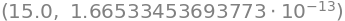
The function quad returns two numbers as output:
the value of the integral and a precision parameter.
In output of the code,
tells us the value of the integral is \(\int_{0}^5 f(x)\,dx\)
is 15.0 and guarantees the accuracy of this value up to an error of \(1.7\times 10^{-13}\).
Since we’re usually only interested in the value of the integral, we often select the first output of quad so you’ll see the code like quad(...)[0] in all the code examples below.
quad(f, 0, 5)[0]
Example 2N#
Define the function \(g(x) = x\).
def g(x):
return x
quad(g, 0, 5)[0]
Example 3N#
Lets now compute \(\int_{-1}^4 h(x)\,dx\)
def h(x):
return 4 - x**2
quad(h, -2, 2)[0]
Computing integrals symbolically using SymPy#
This is known as an indefinite integral since the limits of integration are not defined.
In contrast,
a definite integral computes the area under \(f(x)\) between \(x=a\) and \(x=b\).
Use integrate(f, (x,a,b)) to compute the definite integrals of the form \(A(a,b)=\int_a^b f(x) \, dx\):
import sympy as sp
x, a, b = sp.symbols("x a b")
The symbols function creates SymPy symbolic variables.
Unlike ordinary Python variables that hold a particular value,
SymPy variables act as placeholders that can take on any value.
We can use the symbolic variables to create expressions, just like we do with math variables in pen-and-paper calculations.
Example 1S: Constant function#
\(f(x) = 3\)
fx = 3
fx
We’ll use the SymPy function integrate for computing integrals.
We call this function
by passing in the expression we want to integrate as the first argument.
The second argument is a triple \((x,a,b)\),
which specifies the variable of integration \(x\),
the lower limit of integration \(a\),
and the upper limit of integration \(b\).
sp.integrate(fx, (x,a,b)) # = A_f(a,b)
The answer \(3\cdot (b-a)\) is the general expression for calculating the area under \(f(x)=c\), for between any starting point \(x=a\) and end point \(x=b\). Geometrically, this is just a height-times-width formula for the area of a rectangle.
To compute the specific integral between \(a=0\) and \(b=5\) under \(f(x)=3\),
we use the subs (substitute) method,
passing in a Python dictionary of the values we want to “plug” into the general expression.
sp.integrate(fx, (x,a,b)).subs({a:0, b:5})
The integral function (indefinite integral) \(F_0(b) = \int_0^b f(x) dx\) is obtained as follows.
F0b = sp.integrate(fx, (x,0,b)) # = F_0(b)
F0b
We can obtain the area by using \(A_f(0,5) = F_0(5) - F_0(0)\):
F0b.subs({b:5}) - F0b.subs({b:0})
Example 2S: Linear function#
\(g(x) = mx\)
gx = x
gx
The integral function \(G_0(b) = \int_0^b g(x) dx\) is obtained by leaving the variable upper limit of integrartion.
G0b = sp.integrate(gx, (x,0,b)) # = G_0(b)
G0b
We can obtain the definite intagral using \(\int_0^5 g(x)\,dx = G_0(5) - G_0(0)\):
G0b.subs({b:5}) - G0b.subs({b:0})
SymPy computed the exact answer for us as a fraction \(\frac{25}{2}\). We can force SymPy to produce a numeric answer by calling \tt{sp.N} on this expression.
sp.N(G0b.subs({b:5}) - G0b.subs({b:0}))
Example 3S: Polynomial function#
\(h(x) = 4 - x^2\)
hx = 4 - x**2
hx
H0b = sp.integrate(hx, (x,0,b))
H0b
We can obtain the area by using \(A_h(0,2) = H_0(2) - H_0(0)\).
H0b.subs({b:2}) - H0b.subs({b:0})
Applications of integration#
Kinematics#
The uniform acceleration motion (UAM) equations…
Let’s analyze the case where the net force on the object is constant. A constant force causes a constant acceleration \(a = \frac{F}{m} = \textrm{constant}\). If the acceleration function is constant over time \(a(t)=a\). We find \(v(t)\) and \(x(t)\) as follows:
t, a, v_i, x_i = sp.symbols('t a v_i x_i')
vt = v_i + sp.integrate(a, (t, 0,t) )
vt
xt = x_i + sp.integrate(vt, (t,0,t))
xt
You may remember these equations from your high school physics class. They are the uniform accelerated motion (UAM) equations:
In high school, you probably had to memorize these equations. Now you know how to derive them yourself starting from first principles.
Solving differential equations#
The fundamental theorem of calculus is important because it tells us how to solve differential equations. If we have to solve for \(f(x)\) in the differential equation \(\frac{d}{dx}f(x) = g(x)\), we can take the integral on both sides of the equation to obtain the answer \(f(x) = \int g(x)\,dx + C\).
A differential equation is an equation that relates some unknown function \(f(x)\) to its derivative.
An example of a differential equation is \(f'(x)=f(x)\).
What is the function \(f(x)\) which is equal to its derivative?
You can either try to guess what \(f(x)\) is or use the dsolve function:
Kinematics revisited#
t, a, k, lam = sp.symbols("t a k \\lambda")
x = sp.Function("x")
newton_eqn = sp.diff(x(t), t, t) - a
sp.dsolve(newton_eqn, x(t)).rhs
Bacterial growth#
b = sp.Function('b')
bio_eqn = k*b(t) - sp.diff(b(t), t)
sp.dsolve(bio_eqn, b(t)).rhs
Radioactive decay#
r = sp.Function('r')
radioactive_eqn = lam*r(t) + sp.diff(r(t), t)
sp.dsolve(radioactive_eqn, r(t)).rhs
Simple harmonic motion (SHM)#
w = sp.symbols("w", nonnegative=True)
SHM_eqn = sp.diff(x(t), t, t) + w**2*x(t)
sp.dsolve(SHM_eqn, x(t)).rhs
Probability calculations#
def fZ(z):
return 1 / np.sqrt(2*np.pi) * exp(-z**2 / 2)
quad(fZ, a=-1, b=1)[0]
quad(fZ, a=-2, b=2)[0]
quad(fZ, a=-3, b=3)[0]
Sequences and series#
Sequences#
Sequences are functions that take whole numbers as inputs. Instead of continuous inputs \(x\in \mathbb{R}\), sequences take natural numbers \(k\in\mathbb{N}\) as inputs. We denote sequences as \(a_k\) instead of the usual function notation \(a(k)\).
We define a sequence by specifying an expression for its \(k^\mathrm{th}\) term.
from ministats.calculus import plot_seq
def n_k(k):
return k
print([n_k(k) for k in range(0,11)])
plot_seq(n_k, start=0, stop=10, label="$n_k$");
[0, 1, 2, 3, 4, 5, 6, 7, 8, 9, 10]
{kind=link}
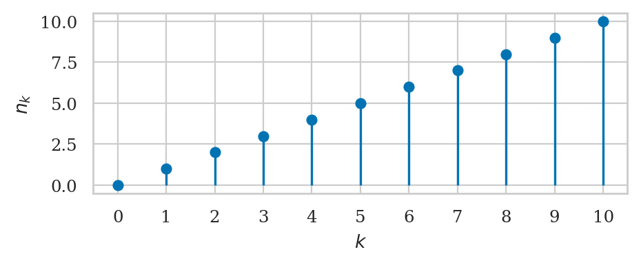
def q_k(k):
return k**2
print([q_k(k) for k in range(1,11)])
plot_seq(q_k, start=0, stop=10, label="$q_k$");
[1, 4, 9, 16, 25, 36, 49, 64, 81, 100]
{kind=link}
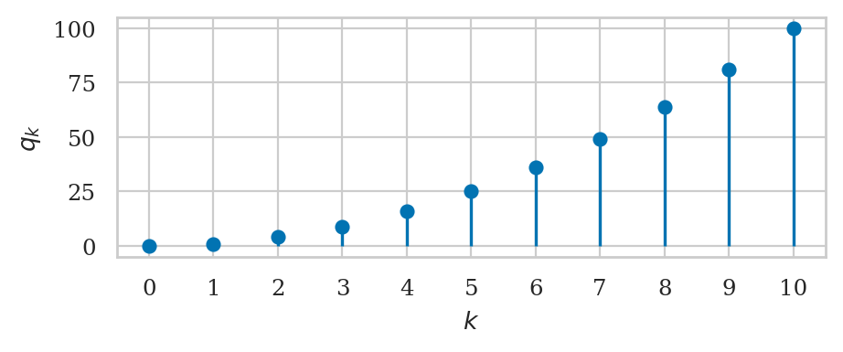
def h_k(k):
return 1 / k
print([round(h_k(k),4) for k in range(1,10)])
plot_seq(h_k, start=1, stop=20, label="$h_k$");
[1.0, 0.5, 0.3333, 0.25, 0.2, 0.1667, 0.1429, 0.125, 0.1111]
{kind=link}
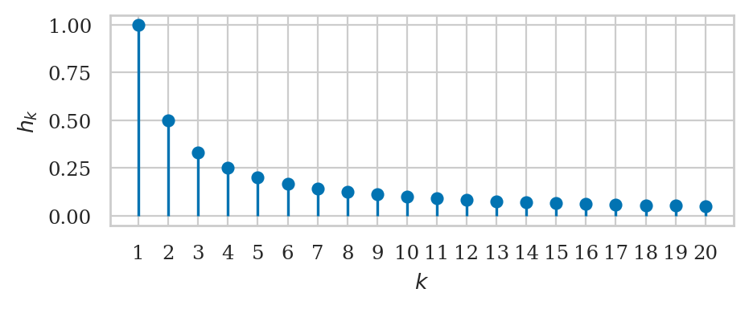
def a_k(k):
return (-1)**(k+1) / k
print([round(a_k(k),4) for k in range(1,10)])
plot_seq(a_k, start=1, stop=20, label="$a_k$");
[1.0, -0.5, 0.3333, -0.25, 0.2, -0.1667, 0.1429, -0.125, 0.1111]
{kind=link}
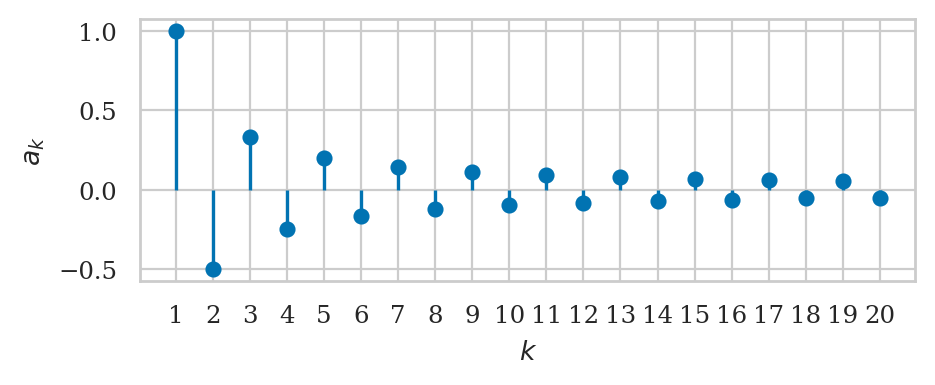
from math import factorial
def f_k(k):
return 1 / factorial(k)
print([round(f_k(k),6) for k in range(0,10)])
plot_seq(f_k, start=0, stop=10, label="$f_k$");
[1.0, 1.0, 0.5, 0.166667, 0.041667, 0.008333, 0.001389, 0.000198, 2.5e-05, 3e-06]
{kind=link}
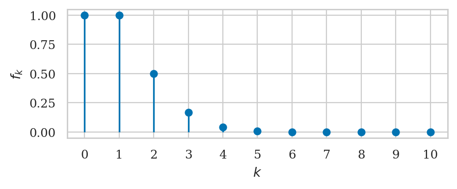
def g_k(k, r=0.5):
return r**k
print([round(g_k(k),5) for k in range(0,11)])
plot_seq(g_k, start=0, stop=10, label="$g_k$");
[1.0, 0.5, 0.25, 0.125, 0.0625, 0.03125, 0.01562, 0.00781, 0.00391, 0.00195, 0.00098]
{kind=link}
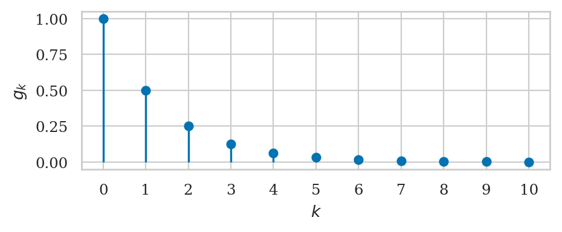
def b_k(k):
return 2**k
print([b_k(k) for k in range(0,11)])
plot_seq(b_k, start=0, stop=10, label="$b_k$");
[1, 2, 4, 8, 16, 32, 64, 128, 256, 512, 1024]
{kind=link}
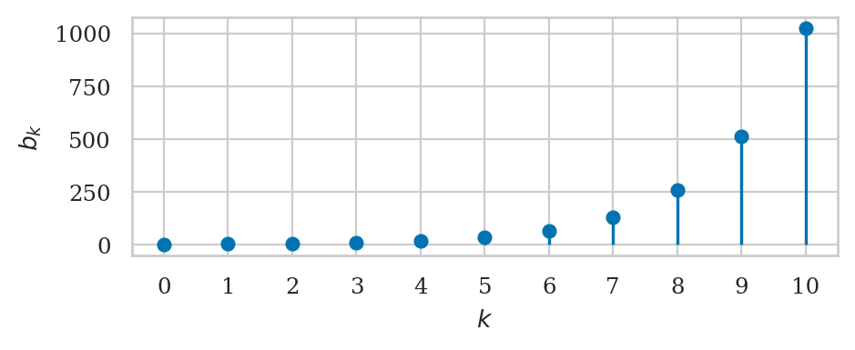
k = sp.symbols("k")
a_k = 1 / k
b_k = 1 / sp.factorial(k)
Substitute the desired value of \(k\) to see the value of the \(k^\mathrm{th}\) term:
a_k.subs({k:5})
The Python list comprehension syntax [item for item in list]
can be used to print the sequence values for some range of indices:
[ a_k.subs({k:i}) for i in range(1,8) ]
[ b_k.subs({k:i}) for i in range(0,8) ]
Observe that \(a_k\) is not defined for \(k=0\)
since \(\frac{1}{0}\) is a division-by-zero error.
In other words,
the domain of \(a_k\) is the nonnegative natural numbers \(a_k:\mathbb{N}_+ \to \mathbb{R}\).
Observe how quickly the factorial function \(k!=1\cdot2\cdot3\cdots(k-1)\cdot k\) grows:
\(7!= 5040\), \(10!=3628800\), \(20! > 10^{18}\).
We’re often interested in calculating the limits of sequences as \(k\to \infty\). What happens to the terms in the sequence when \(k\) becomes large?
sp.limit(a_k, k, sp.oo)
sp.limit(b_k, k, sp.oo)
Both \(h_k=\frac{1}{k}\) and \(f_k = \frac{1}{k!}\) converge to \(0\) as \(k\to\infty\).
Exact sums#
Series#
Suppose we’re given a sequence \(a_k\) and we want to compute the sum of all the values in this sequence \(\sum_{k}^\infty a_k\). Series are sums of sequences. Summing the values of a sequence \(a_k:\mathbb{N}\to \mathbb{R}\) is analogous to taking the integral of a function \(f:\mathbb{R} \to \mathbb{R}\).
from ministats.calculus import plot_series
def f_k(k):
return 1 / factorial(k)
plot_series(f_k, start=0, stop=10, label="$b_k$");
The sum of the first 11 terms of the sequence is 2.718282
{kind=link}
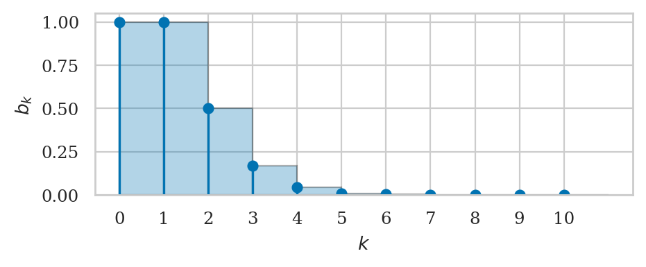
Example 1: sum of a geometric series#
plot_series(g_k, start=0, stop=10, label="$g_k$");
The sum of the first 11 terms of the sequence is 1.999023
{kind=link}
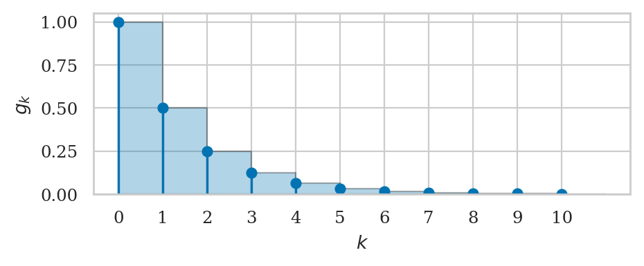
sum([g_k(k) for k in range(0, 10)])
sum([g_k(k) for k in range(0, 20)])
sum([g_k(k) for k in range(0, 100)])
Convergent and divergent series#
sum([h_k(k) for k in range(1, 20)])
sum([h_k(k) for k in range(1, 100)])
sum([h_k(k) for k in range(1, 1000)])
sum([h_k(k) for k in range(1, 1_000_000)])
import sympy as sp
k = sp.symbols("k")
sp.summation(1/k, (k,1,sp.oo))
Example 2#
Using a Python for-loop,
we can obtain an approximation to \(e\) that is accurate to six decimals by summing 10 terms in the series:
import math
def f_k(n):
return 1 / math.factorial(n)
sum([f_k(k) for k in range(0, 10)])
sum([f_k(k) for k in range(0, 15)])
sum([f_k(k) for k in range(0, 20)])
The approximation we obtain using 20 terms in a series is a very good approximation to the exact value.
math.e
The SymPy function sp.summation to compute the infinite sum.
import sympy as sp
k = sp.symbols("k")
sp.summation(1/sp.factorial(k), (k,0,sp.oo))
Example 3#
def a_k(k):
return (-1)**(k+1) / k
sum([a_k(k) for k in range(1,10+1)])
sum([a_k(k) for k in range(1,100+1)])
sum([a_k(k) for k in range(1,1000+1)])
sum([a_k(k) for k in range(1,1_000_000+1)])
sp.summation((-1)**(k+1) / k, (k,1,sp.oo))
math.log(2)
To work with series in SymPy,
use the summation function whose syntax is analogous to the integrate function:
sp.summation(1/sp.factorial(k), (k,0,sp.oo))
We say the series \(\sum h_k\) diverges to infinity (or is divergent) while the series \(\sum f_k\) converges (or is convergent). As we sum together more and more terms of the sequence \(f_k\), the total becomes closer and closer to some finite number. In this case, the infinite sum \(\sum_{k=0}^\infty \frac{1}{k!}\) converges to the number \(e=2.71828\ldots\).
sp.E.evalf() # true value
Taylor series#
Wait, there’s more! Not only can we use series to approximate numbers, we can also use them to approximate functions.
A power series is a series whose terms contain different powers of the variable \(x\). The \(k^\mathrm{th}\) term in a power series is a function of both the sequence index \(k\) and the input variable \(x\).
For example, the power series of the function \(\exp(x)=e^x\) is
This is, IMHO, one of the most important ideas in calculus: you can compute the value of \(\exp(5)\) by taking the infinite sum of the terms in the power series with \(x=5\):
# exp_xk = x**k / sp.factorial(k)
# sp.summation( exp_xk.subs({x:5}), (k,0,sp.oo)).evalf()
sp.exp(5).evalf() # the true value
Note that SymPy is actually smart enough to recognize that the infinite series
you’re computing corresponds to the closed-form expression \(e^5\):
# sp.summation( exp_xk.subs({x:5}), (k,0,sp.oo))
The coefficients in the power series of a function (also known as the Taylor series) The formula for the \(k^\mathrm{th}\) term in the Taylor series of \(f(x)\) expanded at \(x=c\) is \(a_k(x) = \frac{f^{(k)}(c)}{k!}(x-c)^k\), where \(f^{(k)}(c)\) is the value of the \(k^\mathrm{th}\) derivative of \(f(x)\) evaluated at \(x=c\).
Obtaining Taylor series using SymPy#
The SymPy function series is a convenient way to obtain the series of any function fun.
Calling sp.series(fun,var,x0,n)
will show you the series expansion of expr
near var=x0 including all powers of var less than n.
import sympy as sp
x = sp.symbols("x")
sp.series(1/(1-x), x, x0=0, n=8)
sp.series(1/(1+x), x, x0=0, n=8)
sp.series(sp.E**x, x, x0=0, n=7)
sp.series(sp.sin(x), x, x0=0, n=8)
sp.series(sp.cos(x), x, x0=0, n=8)
sp.series(sp.ln(x+1), x, x0=0, n=6)
Multivariable calculus#
Multivariable functions#
import numpy as np
import matplotlib.pyplot as plt
xmax = 2.01
ymax = 4.02
x = np.linspace(-xmax, xmax, 300)
y = np.linspace(-ymax, ymax, 300)
X, Y = np.meshgrid(x, y)
Z = 4 - X**2 - Y**2/4
# Surface plot
fig = plt.figure(figsize=(4,4))
ax = fig.add_subplot(111, projection="3d")
Zpos = np.ma.masked_where(Z < 0, Z)
surf = ax.plot_surface(X, Y, Zpos,
# rstride=3, cstride=3,
alpha=0.6,
linewidth=0.1,
antialiased=True,
cmap="viridis")
ax.set_box_aspect((2, 2, 1))
ax.set_xlabel("$x$")
ax.set_ylabel("$y$")
ax.set_zlabel("$f(x,y)$");
filename = os.path.join("figures/tutorials/calculus", "mulivar_surface_plot_paraboloid.pdf")
savefigure(ax, filename)
Saved figure to figures/tutorials/calculus/mulivar_surface_plot_paraboloid.pdf
Saved figure to figures/tutorials/calculus/mulivar_surface_plot_paraboloid.png
{kind=link}
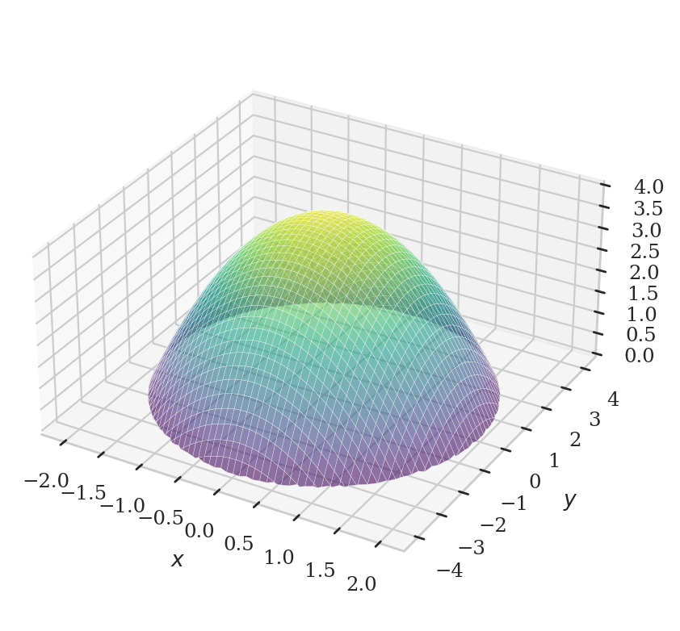
fig, ax = plt.subplots(figsize=(6,3))
cplot = ax.contour(X, Y, Z,
levels=[0,1,2,3,3.9],
cmap="viridis")
plt.clabel(cplot, inline=1, fontsize=9)
ax.set_xlabel('$x$')
ax.set_ylabel('$y$')
filename = os.path.join("figures/tutorials/calculus", "mulivar_countour_plot_paraboloid.pdf")
savefigure(ax, filename)
Saved figure to figures/tutorials/calculus/mulivar_countour_plot_paraboloid.pdf
Saved figure to figures/tutorials/calculus/mulivar_countour_plot_paraboloid.png
{kind=link}
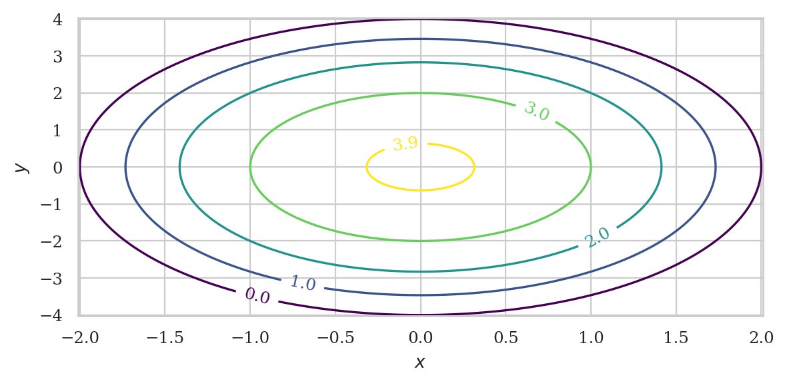
Partial derivatives#
Gradient#
Partial integration#
from ministats.book.figures import plot_slices_through_paraboloid
ax = plot_slices_through_paraboloid(direction="x")
filename = os.path.join("figures/tutorials/calculus", "mulivar_x_slices_through_paraboloid.pdf")
savefigure(ax, filename)
Saved figure to figures/tutorials/calculus/mulivar_x_slices_through_paraboloid.pdf
Saved figure to figures/tutorials/calculus/mulivar_x_slices_through_paraboloid.png
{kind=link}
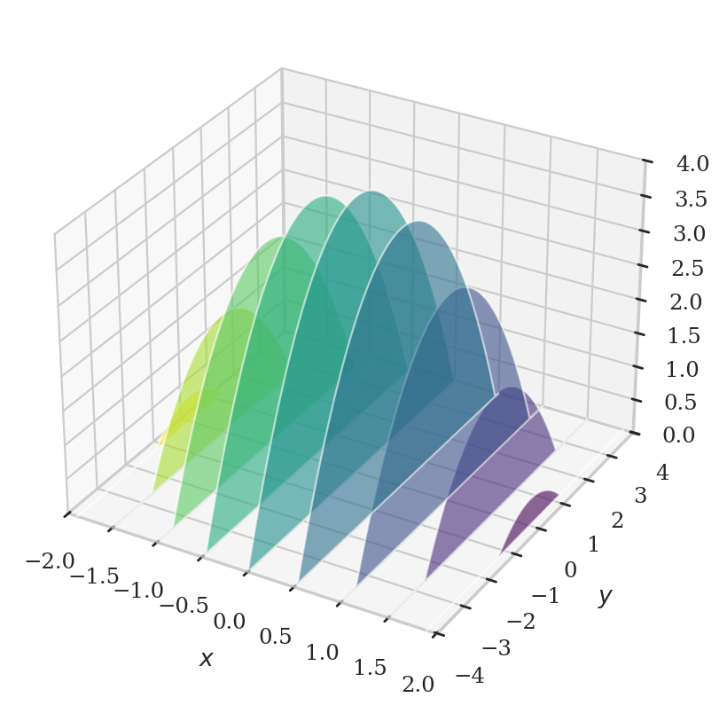
ax = plot_slices_through_paraboloid(direction="y")
filename = os.path.join("figures/tutorials/calculus", "mulivar_y_slices_through_paraboloid.pdf")
savefigure(ax, filename)
Saved figure to figures/tutorials/calculus/mulivar_y_slices_through_paraboloid.pdf
Saved figure to figures/tutorials/calculus/mulivar_y_slices_through_paraboloid.png
{kind=link}
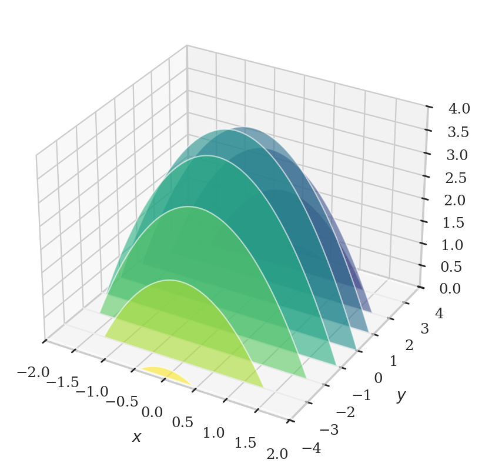
Double integrals#
Applications of multivariable calculus#
Vector calculus#
Definitions#
from ministats.book.figures import plot_point_charge_field
ax = plot_point_charge_field(elev=20, azim=40, grid_lim=1.5, n_points=6)
filename = os.path.join("figures/tutorials/calculus", "vector_calc_E_field_positive_charge.pdf")
savefigure(ax, filename)
Saved figure to figures/tutorials/calculus/vector_calc_E_field_positive_charge.pdf
Saved figure to figures/tutorials/calculus/vector_calc_E_field_positive_charge.png
{kind=link}
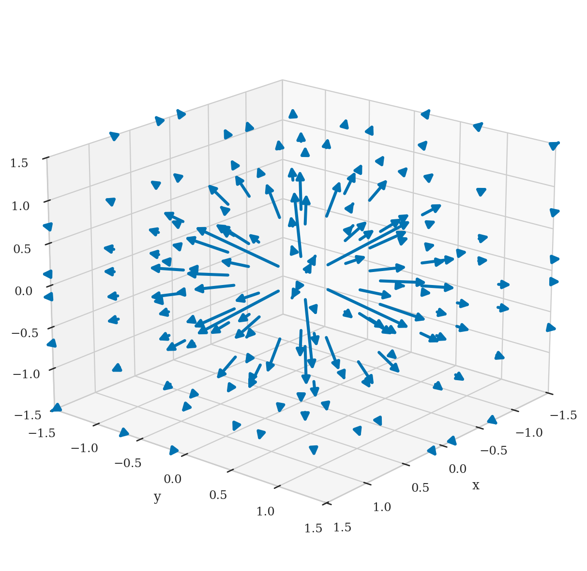
Path integrals#
Surface integrals#
Applications of vector calculus#
Links#
CUT MATERIAL#
We’ll discuss sp.dsolve again in the section on mechanics.
Trapezoid approximation (optional)#
Let’s now use another approach based on the trapezoid approximation.
We must build array of inputs \(x\) and outputs \(g(x)\) of the function,
then pass it to trapz so it carries out the calculation.
# from scipy.integrate import trapezoid
# m = 1000
# xs = np.linspace(0, 5, m)
# gxs = g(xs)
# trapezoid(gxs, xs)